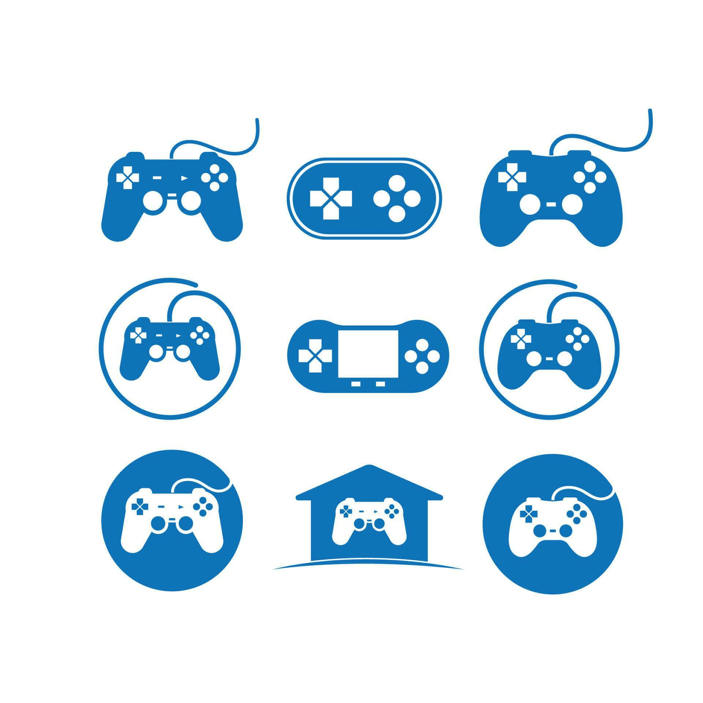
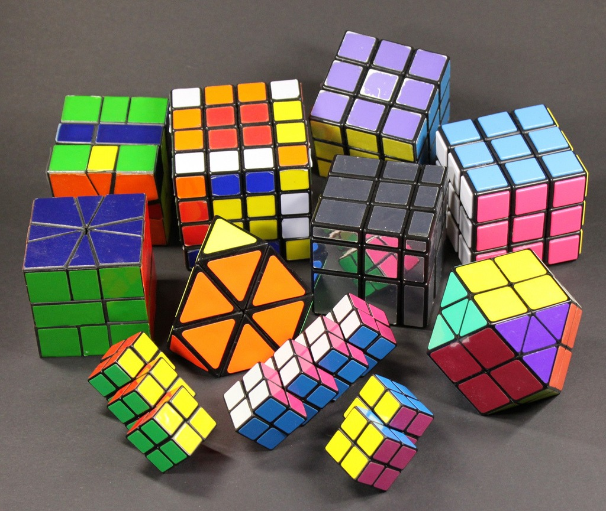
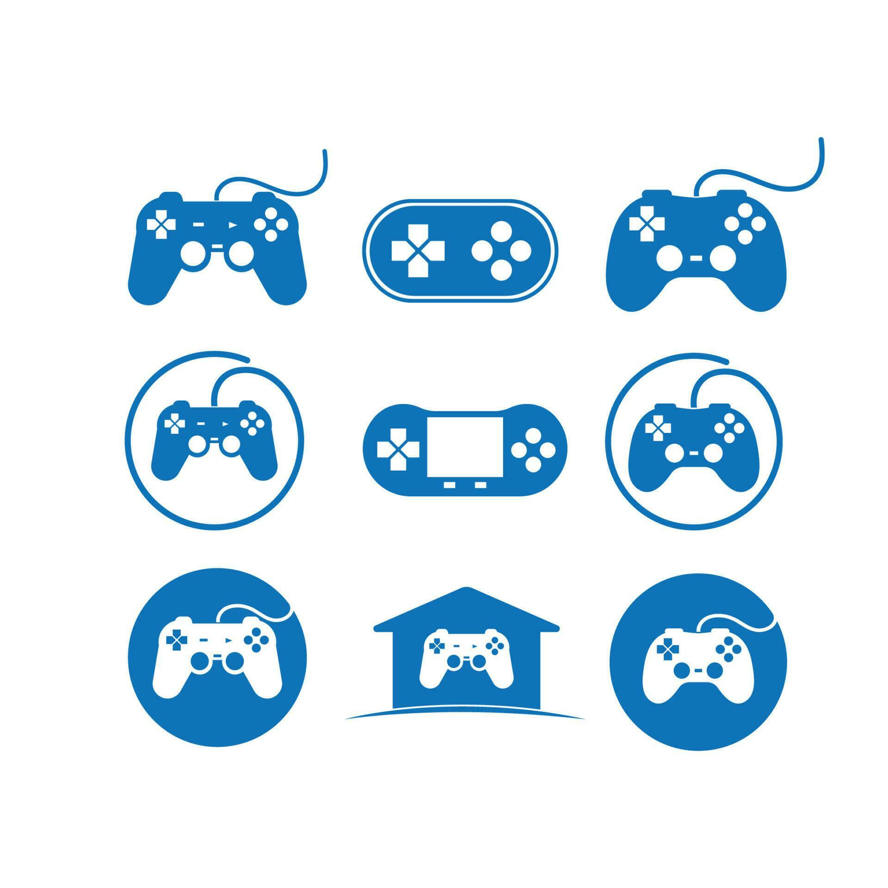
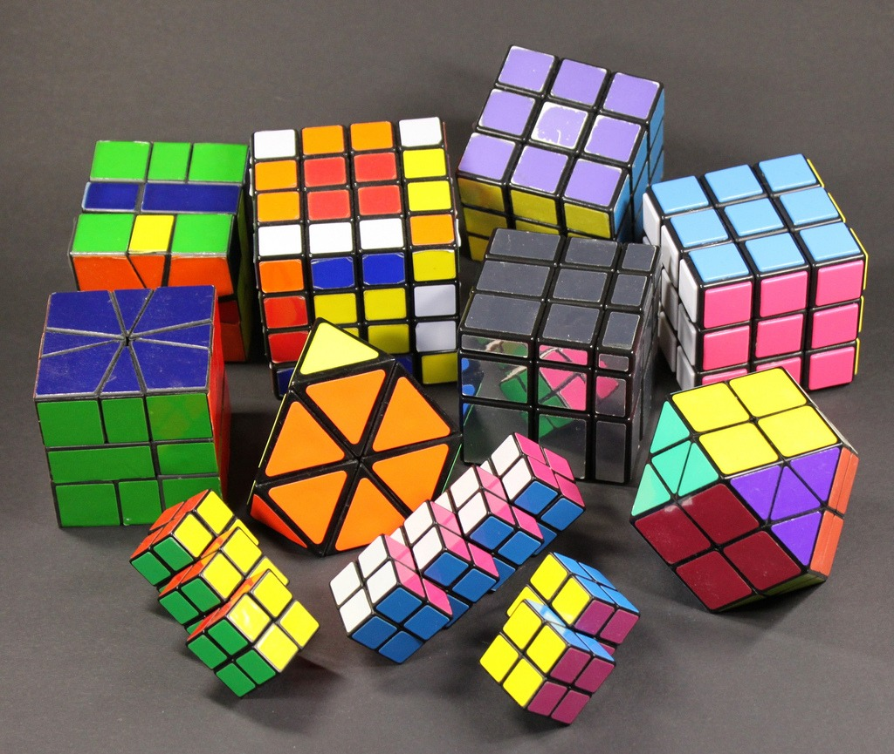

About Me
I write, research, teach, and build — with a strong focus on literature, culture, storytelling, and technology. I graduated M.A. in English Literature from The English and Foreign Languages University and earlier emerged as the topper of my college from the University of Madras for my B.A. More details in the sections below (and my résumé).
Journey
2023 — M.A., English Literature — EFLU, Shillong
Graduated Summa cum laude. GPA: 7.15/9.0
Thesis and coursework focused on literary theory, constructivist pedagogy, postcoloniality, romanticism, and more. Active in film club and festival curation.
2021 — B.A., English Literature — University of Madras
University Topper. GPA: 7.1/10
Active in quizzes and cultural events; early involvement in community service (NSS).
2019 — Internship at Utter (EdTech)
Worked remotely; supported conversational English learners and pedagogy.
Experience in learner motivation, multilingual comparisons, and instruction design.
2022–2023 — Freelance Content Writer
Wrote articles across tech, health, and entertainment; learned SEO, reach strategies, and structural writing.
Honors & Awards
- Summa cum laude — M.A., EFLU.
- University Topper — B.A., University of Madras.
- Multiple medals in humanities-related MOOCs (IIT Kanpur, IIT Madras).
Certifications
- Spanish DELE A2 (Instituto Cervantes)
- Postcolonial Literature [Gold Medal] (Indian Institute of Technology, Kanpur)
- History of English Literature [Silver Medal] (Indian Institute of Technology, Madras)
- The Popular Gothic Novel [Silver Medal] (Indian Institute of Technology, Madras)
- Basics of Spanish Language and Culture (Indira Gandhi National Open University, New Delhi)
- Introduction to Who Wrote Shakespeare (University of London)
- Soren Kierkegaard – Subjectivity, Irony, and the Crisis of Modernity (University of Copenhagen)
- CS50x (Harvard University)
Publications & Projects
- Short story in an international anthology “Jeremiad of Hearts”.
- Short story “Eight Minutes” (Amazon KDP).
- Published a book of post-modern poetry titled "Pulp Poetry".
- Organized Cherry Orchard Film Festival (EFLU, 2022).
Interests
Writing, reading across genres, world cinema (horror-fanatic), gaming, travel, linguistics, chess, rubik's cubes and philately.
 




Technical & Software
C / C++
Python
HTML / CSS / JS
Flask
SQLite
Community
NSS activity, film club leadership, quiz society, model UN, and volunteer projects (blood drives, cleanups).
Fun facts
- Can solve 2x2 – 5x5 Rubik's cubes
- A Philatelist (A collector of stamps)
- Presented papers at several national conferences